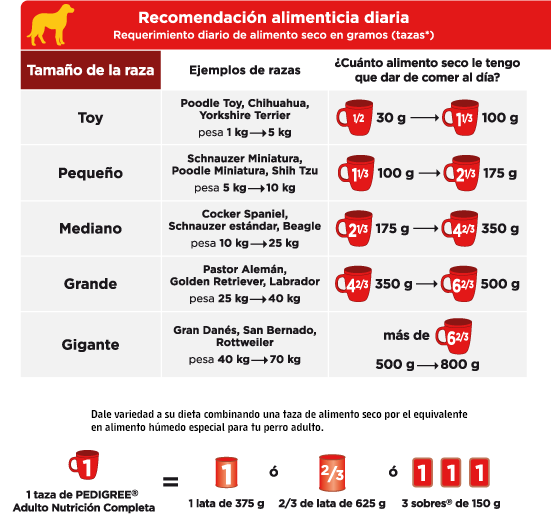

El chocolate contiene cafeína y teobromina, una sustancia que puede causar grandes daños en el sistema nervioso de los perros. La teobromina también puede causar alergia, arritmias, convulsiones y aumento de la presión arterial. El chocolate negro es el peor, porque tiene un alto porcentaje de teobromina. Si un perro come un pedazo de chocolate, los principales síntomas pueden ser vómitos, deshidratación, dolor y/o nerviosismo.
En la edad adulta no necesitan la leche en su dieta. El perro no tiene la enzima encargada de digerir la lactosa. El consumo de leche puede causar diarrea, vómitos y otros problemas gastrointestinales. Aunque no letal, la leche puede contribuir a enfermedades futuras.
Estos alimentos grasos pueden causar malestar gastrointestinal o en algunos casos incluso pancreatitis.
La cebolla contiene tiosulfato, que puede causar que los perros desarrollen anemia. La cebolla puede deteriorar los glóbulos de la sangre de los perros, que puede dejar a los animales muy débiles. Si se consume una gran cantidad, el animal podría necesitar hasta una transfusión de sangre. Hablamos de cebolla en grandes cantidades o en su dieta habitual.
Pertenece a la misma familia que la cebolla, pero el ajo es más fuerte, es decir, el nivel de toxicidad es muy alto. Los efectos del ajo no aparecerán inmediatamente. Con el tiempo, la orina del perro va a ser de un color entre naranja y rojo intenso. El ajo puede causar anemia e insuficiencia renal en algunos casos por la pérdida de hemoglobina.
Hay casos en los que el consumo de sólo 6 uvas habría causado una insuficiencia renal aguda en los perros. Los compuestos químicos que causan el envenenamiento de los animales por la ingestión de uvas son todavía desconocidos. Uvas y pasas pueden causar insuficiencia renal aguda.
Una sustancia tóxica llamada Persina la podemos encontrar en los aguacates.
Los huevos crudos pueden causar intoxicación por Salmonella en los perros.
Los posibles riesgos se relacionan con la aparición de caries, diabetes y aumento de peso.
La granada tiene semillas difíciles de digerir para los perros. Puede sufrir vómitos y dolores estomacales si come una granada.